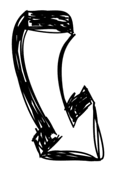
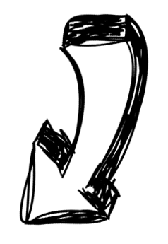

The steps that we habitually follow

We follow the golden mean in both our work and personal life, so even if we incidentally take a shot at an extremely spicy dish we balance that out by a healthy glass of milk. So much so that we also season each one of our projects with an even dose of quality assurance refinement. If you were wondering how we got the hang of it, take a look at the steps that we have come to habitually follow:
- as soon as we receive your project QA order, we evaluate the content specificity and applicable rules, as well as analyse your instructions and overall complexity of the task;
- then, we work out the time and resource coordinates and plan our resource reserve based on unanticipated changes;
- what we do next is get familiarized with the subject matter and the project kit; we touch base on the format of your deliverables and reach a common understanding of the quality requirements with the dedicated PM;
- as soon as that is covered, we get down to executing the allocated task and resolve any unidentified risks by coordination;
- finally, we submit our deliverables to you and file the project documentation, recording any and all written feedback on the quality of the translation.
Evaluation of project specifics

Editing

Proofing
Translator feedback loop
SME accuracy control
Implementation
Technical review
Design / layout QA
Client's validation
Final delivery